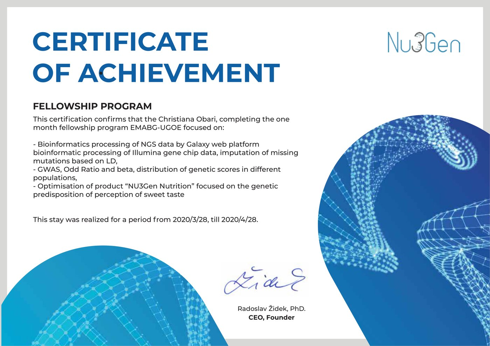

Education and mentoring that move ideas forward.
Workshops, mentoring for researchers and startups, consumer education and scientific training — NU3Gen's know-how transfer, built on collaboration with universities, EU projects and partners.
Workshops
NU3Gen's workshops combine scientific content with entrepreneurial-thinking development — from university EU projects to invited talks for partner consortia.
DETECT! — EIT HEI (SPU Nitra)
Collaboration on the DETECT! project as part of the EIT HEI initiative, led by a consortium centred on the Slovak University of Agriculture in Nitra (together with UCT Prague, Maker Institute, Poznań University of Life Sciences, the Technological Innovation Centre Zlín, and the University of Vienna), focused on developing entrepreneurial skills in deep-tech sectors. The project included earning a certificate for delivering training in entrepreneurial-mindset development.
Accelerating Plant Based Food Entrepreneurship
An Erasmus+ project (KA220-VET, ref. 2024-1-SK01-KA220-VET-000245686) supporting entrepreneurship in plant-based foods. The project included a talk on digitalisation and blockchain.
DigiFabs
An invited talk (a nutrition deep dive) as part of the DigiFabs project — a European initiative supporting the digital transformation of food and beverage SMEs, aimed at educators, students and companies in the sector.
digifabs.eu ↗Mentoring
Mentoring is aimed at researchers and early-stage entrepreneurs — from a research idea to an application, publication, project or intellectual-property protection. It connects academic supervision with hands-on experience from the NU3Gen team's own projects and collaborations.
EIT Food Challenge Lab Slovakia (2024, 2025)
Mentoring teams of students, PhD candidates and early-stage entrepreneurs at the two-day EIT Food Hub Slovakia hackathon, organised by the Slovak Centre of Scientific and Technical Information (CVTI SR) together with the Slovak University of Agriculture in Nitra. Supporting teams on agrifood, genetics and business-idea development across both the 2024 (Bratislava) and 2025 (AgroBioTech Nitra) editions.
Consumer education
Consumer education builds on the activities of the Eurospotrebitelia civic association — conferences on gastronomy, food labelling and nutrition (2014–2017), and Slovakia's participation in the EIT Food RIS Consumer Engagement Labs (2020), where seniors also took part in co-creating a food product. It centres on three groups: seniors, primary- and secondary-school pupils, and lifelong learning across generations.
More about Eurospotrebitelia →Senior education
In partnership with the Slovak University of Agriculture in Nitra, NU3Gen oversees the participation of seniors from JAS – Jednota aktívnych seniorov Žilina-Bytčica in sensory testing of future foods — from edible gels (May 2024, March 2025) to alternative crackers of the future (October 2024), held alternately at the university and at their day centre in Bytčica.
Primary and secondary schools
Consumer education also reaches the younger generation — repeated participation in the nationwide European Researchers' Night event, where primary- and secondary-school pupils get a hands-on, popular-science introduction to genetics, food and bioinformatics.
nocvyskumnikov.sk ↗Lifelong learning
Workshops, mentoring, sensory testing with seniors and school activities all share one goal — making the science of food and genetics accessible across generations, from children to seniors. Preserving culinary heritage and educating the public about regional gastronomy is also supported through collaboration with the civic association Tradičná chuť regiónov Slovenska (Traditional Taste of Slovak Regions).
Scientific training
Scientific training builds on the NU3Gen team's academic background — working with data, professional literature and biological analytical methods in genetics, sensory science, bioinformatics and food science.
Fellowship programme for international students
NU3Gen runs a one-month fellowship programme for students from international university programmes — participants so far have come from France and Germany through EMABG (European Master in Animal Biodiversity and Genomics), a joint Erasmus Mundus master's programme run by AgroParisTech, Göttingen, SLU, BOKU, NMBU and Wageningen University. The placement covers bioinformatic processing of NGS and genotyping data (the Galaxy platform, Illumina chips), imputation of missing mutations based on LD, GWAS analysis and the distribution of genetic scores across populations — applied directly to the development of the NU3Gen Nutrition product.
